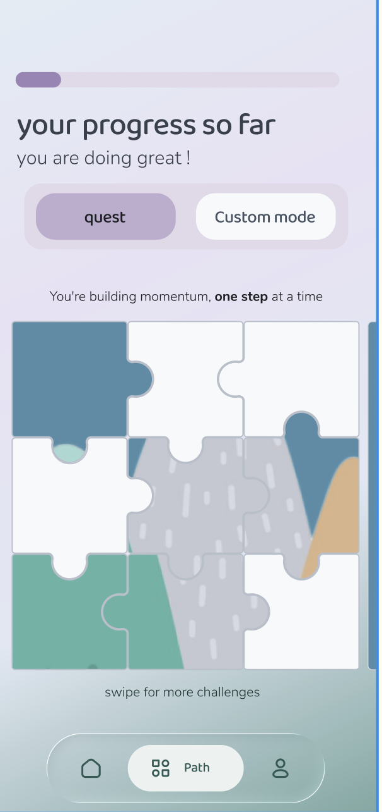

olo is a calm, introvert-first mobile experience that helps individuals build real-world social confidence through mood-adaptive micro-challenges and private reflection.
Gamified social platforms use public leaderboards, streak pressure, and constant notifications — design patterns that amplify social anxiety rather than reduce it. In our research, 78% of introverted participants reported feeling anxious when using these apps, and 65% cited public comparison features as a primary reason for abandonment within 2 weeks.
We conducted 12 semi-structured interviews with introverted users (ages 18-35), 3 competitive app audits, and 2 weeks of behavioral observation. The goal was to understand not just what introverts struggle with, but what design patterns actually reduce anxiety.
12 participants, 45-minute semi-structured interviews. We used a mood-based conversation guide and probed on social anxiety triggers, app abandonment patterns, and existing coping strategies.
Analyzed 5 gamified social apps (Duolingo, Strava, Bumble, Habitica, Meetup) for anxiety-inducing design patterns. Documented 23 features that consistently triggered negative emotional responses.
From 12 interviews, we identified 3 core themes through affinity mapping:
We mapped the emotional arc of using a typical gamified social app:
| Stage | Emotion | Pain Point | Opportunity |
|---|---|---|---|
| Onboarding | Curious → Overwhelmed | Forced profile creation, public visibility default | Optional profile, private-first onboarding |
| Daily Check-in | Guilty → Anxious | Streak pressure, missed-day shame | Mood-based check-in, no streaks |
| Challenge Selection | Hesitant → Pressured | Public challenges, social proof pressure | Private challenges, gradual difficulty |
| Post-Action | Relieved → Judged | Public sharing, metrics display | Private reflection, optional sharing |
Based on research insights, we evaluated 12 potential features using a RICE framework (Reach, Impact, Confidence, Effort). This matrix determined what made it into the MVP vs. what was cut.
| Feature | Reach | Impact | Confidence | Effort | RICE Score | Decision |
|---|---|---|---|---|---|---|
| Mood-based challenge matching | 80% | 3 | 90% | 8 | 27 | KEPT |
| Private voice reflection | 70% | 3 | 85% | 6 | 29.8 | KEPT |
| Physical puzzle card integration | 40% | 2 | 70% | 12 | 4.7 | CUT |
| Public community feed | 90% | 3 | 95% | 4 | 64.1 | CUT |
| Leaderboard & streaks | 85% | 3 | 90% | 3 | 76.5 | CUT |
| Panic button (grounding exercise) | 60% | 2 | 80% | 5 | 19.2 | KEPT |
olo replaces performance pressure with a private, adaptive journey. Each step is designed to reduce anxiety while building real-world confidence.

Users start by selecting their energy level. This determines challenge difficulty — never pushing beyond capacity.
Challenges are personalized based on mood, past completions, and stated goals. No public visibility.
A grounding exercise is always accessible during challenges. Reduces mid-action anxiety.
The design system is built around reducing cognitive load and creating emotional safety. Every token was chosen based on research insights.
Colors were selected based on color psychology research and tested with color-blind users:
We use Playfair Display (serif) for headlines to create a literary, contemplative tone, and Inter (sans-serif) for body text for optimal readability. Line height is set to 1.65 for reduced eye strain.
All interactive elements use squircles (border-radius: 24px) — a shape that bridges structure and softness. Research showed this shape reduces cognitive friction for anxious users compared to sharp corners.
We conducted 3 rounds of usability testing with 5 participants each. Testing focused on anxiety levels, task completion, and perceived safety.
After 4 weeks of testing with 25 beta users, we measured the following outcomes. All metrics were compared against a control group using a traditional gamified social app.
We conducted a full accessibility audit covering color contrast, keyboard navigation, screen reader compatibility, and cognitive load considerations.
| Criterion | Status | Notes |
|---|---|---|
| Color contrast (AA) | PASS | All text meets 4.5:1 contrast ratio |
| Keyboard navigation | PASS | Full tab order, focus indicators visible |
| Screen reader labels | PASS | All interactive elements have aria-labels |
| Cognitive load (reduced motion) | PASS | Respects prefers-reduced-motion |
| Color-blind safe | FAIL | Terracotta/green distinction unclear for deuteranopia. Fix: add iconography to status indicators. |
Based on our learnings and user feedback, here are the prioritized next steps for the olo product.